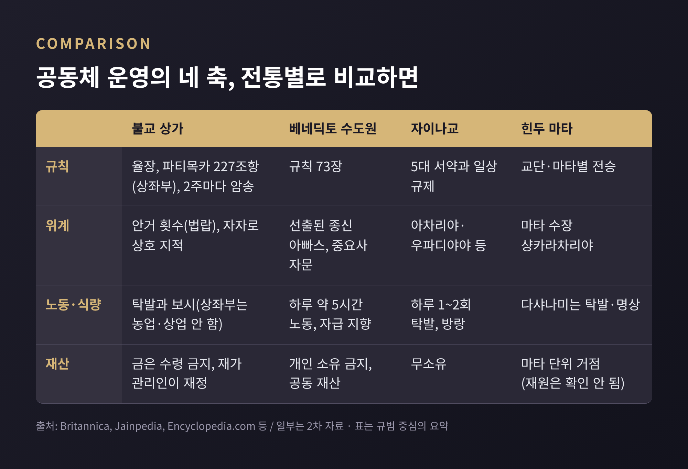
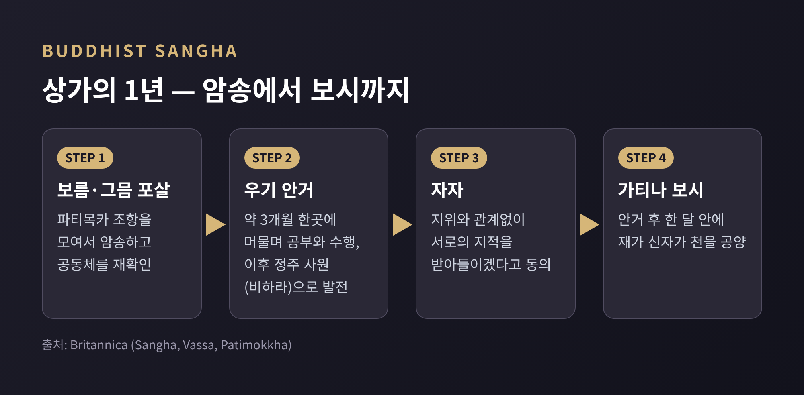
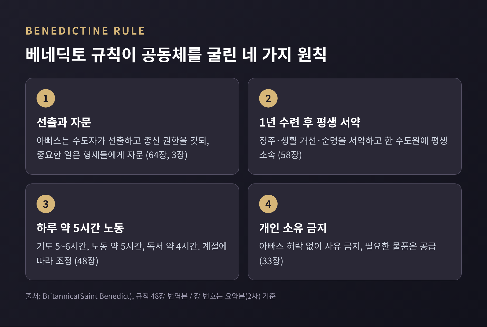
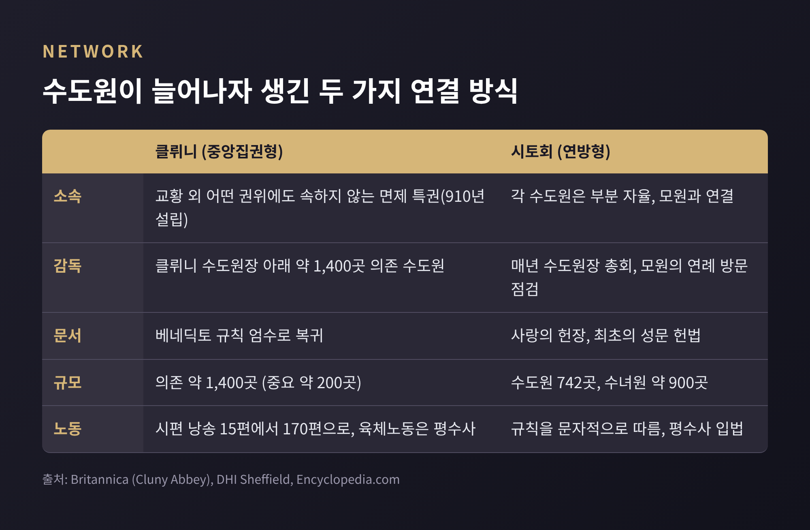
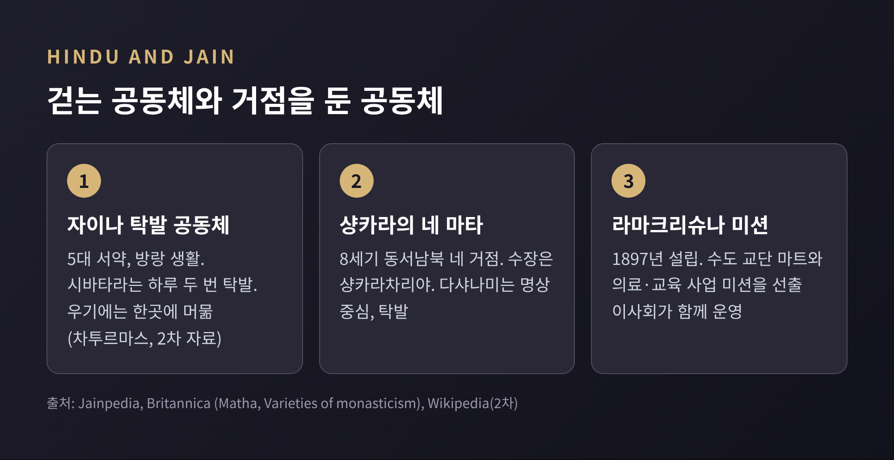

수도원 제도 비교 — 규칙과 노동, 재산으로 공동체는 어떻게 굴러갔을까

이번 글에서는 수도원이라는 공동체가 어떻게 운영되어 왔는지 정리해 보겠습니다. 불교 상가의 율장, 기독교 베네딕토 규칙, 자이나교와 힌두교의 수행 공동체를 나란히 놓고 보면, 서로 다른 신앙이 비슷한 운영 문제를 풀어 간 흔적이 보입니다.
먼저 요점입니다. 거의 모든 전통이 ① 문서화된 규칙, ② 위계와 합의 절차, ③ 노동 또는 탁발이라는 생계 방식, ④ 재산 처리 원칙을 갖추고 있습니다. 다만 그 답은 전통마다 꽤 달랐습니다. 이 글은 신앙의 진위나 우열을 다루지 않고, 제도의 구조만 비교하는 교양 글입니다. 독신이나 금욕의 동기는 다른 글에서 다루었으므로 여기서는 생략합니다.
■ 수도 생활의 공통 뼈대는 '규칙'입니다
브리태니커는 수도 생활을 규칙에 따라 사는 제도화된 종교 실천으로 정의합니다. 일반 신도보다 더 많은 것을 요구하는 규칙이 있다는 점이 핵심입니다. 불교와 자이나교는 처음부터 출가자 중심으로 출발해 지금까지 남은 종교로 소개됩니다.
규칙이 있으면 곧 질문이 따라옵니다. 누가 결정하는가. 무엇을 먹고 사는가. 가진 것은 누구의 것인가. 아래에서 이 세 질문을 따라 전통별 답을 살펴보겠습니다.

■ 불교 상가 — 율장이 정한 규칙과 합의
불교의 율장은 규칙 모음집이면서 사건 기록집에 가깝습니다. 팔리어 율장의 경분별에는 조문마다 그 규칙이 만들어진 계기, 곧 구체적 사건 이야기가 붙어 있습니다. 건도에는 입단 절차, 의식, 음식·의복·처소 규정, 분쟁 처리 절차가 22개 장으로 담겨 있습니다. 규칙이 한꺼번에 선포된 것이 아니라 문제가 생길 때마다 쌓였다는 서술 방식입니다.
그중 비구의 계율 조항인 파티목카는 상좌부 전승에서 227개 조항입니다. 일부 다른 부파의 정본은 약 250개로 전해집니다. 보름과 그믐의 포살 모임에서 이를 암송합니다. 위반은 영구 추방부터 일시 정권, 속죄, 고백만으로 끝나는 가벼운 것까지 단계가 나뉘어 있습니다. 처벌보다 공개적 고백이 가장 낮은 단계에 놓였다는 점이 눈에 띕니다.
위계는 어떻게 셀까요. 태국 전통에서는 안거를 몇 번 났는지가 승려의 선후를 가릅니다. 안거는 우기 약 3개월 동안 한곳에 머무는 관습입니다. 안거가 끝나는 날의 자자(自恣)에서는 지위와 관계없이 모든 비구가 다른 비구의 지적을 받아들이겠다고 동의합니다. 선배가 후배를 일방적으로 다스리는 구조만은 아닌 셈입니다.
경제는 재가 신자의 보시에 기댑니다. 상좌부 율장은 금과 은, 곧 화폐의 수령과 거래를 막습니다. 현대 상좌부 사원에서는 재가 관리인이 사원 재정을 맡고, 시주도 개별 승려가 아니라 관리인에게 전달되는 방식으로 이 규칙을 지킨다고 안내됩니다. 브리태니커는 특히 동남아 상좌부 승려가 상업과 농업에 종사하지 않는다고 설명합니다.

■ 베네딕토 규칙 — 73장으로 설계한 가족 같은 공동체
기독교 수도원의 원형은 4세기 이집트의 파코미우스(290년경~346)에게서 찾습니다. 그는 흩어진 은수자들의 거처를 울타리 안으로 모아 11개 수도원, 7,000명 넘는 수사·수녀의 공동체를 만들었고, 한 명의 장상이 중앙집권적 권한을 갖는 구조와 현존 최초의 수도 규칙을 남겼다고 브리태니커는 설명합니다. 이 흐름을 이어 서유럽의 표준이 된 것이 6세기 누르시아의 베네딕토가 쓴 규칙입니다. 73장으로 이루어진 이 규칙은 수도원을 가족에 빗대고, 아빠스를 아버지로 둡니다. 아빠스는 수도자들이 선출하며, 브리태니커 인물 항목에 따르면 종신으로 최고 권한을 갖고 부원장과 재무 담당 같은 임원을 임명합니다. 한편 3장은 중요한 일을 형제들을 모아 자문하라고 요구합니다. 권한은 크지만 의견을 듣는 절차가 규칙에 들어 있는 것입니다.
가입 방식도 독특합니다. 1년의 수련기를 거친 뒤 안정, 생활 개선, 순명을 서약하고, 평생 한 수도원에 속합니다. 안거로 머무는 불교의 시간 단위와 달리, 장소에 묶는 방식입니다.
'기도하고 일하라'라는 유명한 표어는 규칙 안에 그대로 적혀 있지는 않습니다. 규칙의 정신을 요약한 후대의 표현으로 이해하는 편이 정확합니다. 대신 48장이 일과를 구체적으로 정합니다. 이 장은 "게으름은 영혼의 적"이라는 문장으로 시작하고, 계절에 따라 노동과 독서의 시간을 다르게 배분합니다. 브리태니커는 하루를 기도 5~6시간, 육체노동 약 5시간, 독서 약 4시간으로 정리합니다. 수확철에는 직접 일해야 하더라도 슬퍼하지 말라고 하면서, 약한 이들을 배려하라는 단서를 붙입니다. 병약한 이에게는 놀지도 짓눌리지도 않을 일감을 주라고 합니다.
재산은 철저히 공동입니다. 33장은 아빠스의 허락 없이는 개인 소유를 금지하고, 대신 필요한 물품은 아빠스가 공급하도록 정합니다. 불교 상가가 개인의 화폐 접촉을 막고 사원 재정을 재가자에게 맡긴 것과 달리, 베네딕토 수도원은 노동으로 번 것을 공동 재산으로 삼아 자급을 지향했습니다. 참고로 장 번호는 규칙 요약본(2차 자료)에 근거한 것이고, 선출·종신·소유 금지 같은 내용은 브리태니커와 교차해 확인했습니다.

■ 개별 수도원에서 네트워크로 — 클뤼니와 시토
규칙이 있어도 수도원이 수백 곳으로 늘면 또 다른 문제가 생깁니다. 서로 어떻게 연결하고 감독할 것인가. 중세 유럽은 두 가지 답을 내놓았습니다.
910년 아키텐 공작이 세운 클뤼니는 교황 외에는 어떤 권위에도 속하지 않는 특권을 받았습니다. 브리태니커에 따르면 약 1,400곳의 의존 수도원을 중앙집권적으로 다스렸고, 그중 약 200곳이 중요했습니다. 시토회는 정반대의 방식을 택했습니다. 사랑의 헌장이라는 성문 헌법을 두고, 각 수도원은 부분적으로 자율을 가지되 모원과 연결되었습니다. 수도원장들은 해마다 시토에 모여 총회를 열었고, 각 수도원은 매년 모원의 방문 점검을 받았습니다. 1215년 제4차 라테라노 공의회가 이 체제를 승인했습니다. 브리태니커는 이렇게 가지가 뻗은 시토 체계가 742개 수도원과 약 900개 수녀원에 이르렀다고 적습니다.
노동의 위치도 달라졌습니다. 클뤼니에서는 시편 낭송이 15편에서 170편으로 늘어 하루 대부분이 성가대에서 흘렀고, 육체노동은 평수사들이 맡았습니다. 시토는 규칙을 문자 그대로 따르겠다며 단순함과 노동을 강조했지만, 이곳 역시 많은 일을 평수사가 했다고 백과사전은 전합니다. 어느 쪽이 베네딕토 정신에 더 가까운가는 당대에도, 오늘날 연구에서도 해석이 갈립니다. 여기서는 구조의 차이만 짚어 둡니다.

■ 자이나교와 힌두교 — 걷는 공동체, 거점을 둔 공동체
자이나교 수행자는 불살생, 진실, 불투도, 금욕, 무소유의 5대 서약을 따르고, 대부분 방랑 생활을 합니다. 시바타라 전통의 수행자는 하루 두 번 탁발에 나서며, 46가지 결함이 없는 음식만 재가자에게서 받는다고 설명됩니다. 적법한 공양을 찾는 데 몇 시간이 걸리기도 합니다. 디감바라 전통에서는 재가자가 수행자의 모은 손바닥에 음식을 올립니다. 그러니 이 공동체는 건물이 아니라 재가자와 수행자의 날마다의 만남으로 유지됩니다. 위계는 지도자 아차리야, 교사 우파디야야 등으로 나뉘고, 아차리야는 별도의 승진 의례를 거칩니다.
우기에는 길 위의 생명을 밟지 않도록 한곳에 머뭅니다. 차투르마스라 부르는 이 기간을 위키백과는 4개월로 서술하는데, 단일 2차 자료이므로 불교 안거의 약 3개월과 정확히 비교하기는 어렵습니다. 다만 두 전통 모두 우기에 방랑을 멈춘다는 구조는 같습니다. 또 자이나교의 전승 수치는 『칼파수트라』에서 비구 14,000명, 비구니 36,000명, 재가 남성 159,000명, 재가 여성 318,000명으로 전해지는데, 이는 역사적 통계가 아니라 전승 기록입니다.
힌두교는 중심이 다릅니다. 8세기 샹카라가 동서남북에 네 곳의 마타, 곧 수도 거점을 세웠고 각 마타는 샹카라차리야가 이끕니다. 다샤나미 교단의 수행자는 명상에 집중하고 의례나 인도주의 활동을 하지 않으며 탁발로 삽니다. 브리태니커는 힌두 수도 교단 약 90곳 가운데 약 70곳이 독신과 공동 규칙을 요구한다고 설명합니다. 반면 1897년 비베카난다가 세운 라마크리슈나 미션은 수도 교단인 마트와 병원·학교·구호 사업을 맡는 미션을 나누되, 선출된 이사회가 둘을 함께 운영합니다. 같은 힌두 안에서도 명상 중심과 봉사 중심 사이에 운영 모델의 차이가 큽니다.

■ 노동을 두고 갈린 전통 — 백장청규의 사례
생계 방식은 가장 눈에 띄게 갈린 지점입니다. 상좌부와 자이나가 탁발·보시에 의존한 반면, 중국 선종에는 "하루 일하지 않으면 하루 먹지 않는다"는 말이 백장청규에 귀속되어 전해집니다. 당나라의 백장회해(720~814)가 이를 세웠다는 전승입니다. 선종 사원은 직접 농사를 지어 자급했고, 이 점이 이후 박해 속에서 선종이 버티는 데 도움이 되었다고 보는 서술이 있습니다.
다만 단정은 이릅니다. 백장을 급진적 개혁가로 그린 성인전은 그의 사후 150년 이상 지난 송대에 정리되었고, 초기 사료의 백장은 교학과 선에 밝은 학승에 가깝다는 지적이 있습니다. 청규가 훨씬 후대에 형성되었다는 견해도 있습니다. 어느 해석이든 분명한 것은, 불교 안에서도 지역의 경제 환경에 따라 노동에 대한 태도가 달라졌다는 점입니다. 전통을 옹호하거나 반박하기보다, 이 논쟁을 있는 그대로 두고 보는 것이 비교의 자세에 맞다고 생각합니다.
■ 비교하고 나면 보이는 것들
정리하면 이렇습니다. 첫째, 규칙은 사건의 축적입니다. 율장도 베네딕토 규칙도 공동체가 겪은 문제를 해결하며 두꺼워졌습니다. 둘째, 위계는 있으나 견제 장치도 함께 있습니다. 자자에서의 상호 지적, 아빠스에 대한 자문 의무, 시토의 연례 방문 점검이 그 예입니다. 셋째, 생계와 재산의 방식이 공동체의 모양을 정합니다. 보시에 기대면 재가자와의 관계가 중심이 되고, 자급을 택하면 땅과 노동 조직이 중심이 됩니다.
한계도 짚어 둡니다. 이 글은 각 전통의 이상적 규범을 중심으로 했고, 실제 현장은 시대와 지역에 따라 규범과 크게 달랐을 수 있습니다. 일부 수치는 2차 자료나 전승에 의존하므로 참고용으로 읽어 주시길 권합니다.
끝으로 한 가지만 덧붙입니다. 서로 만난 적 없는 공동체들이 '규칙, 합의, 노동, 재산'이라는 같은 질문 앞에서 저마다 다른 답을 택했다는 것 — 수도원 제도의 비교는 그 질문의 보편성을 보여 줍니다. 만일 어떤 공동체를 오래 유지하는 방법을 묻는다면, 아마 그 답은 신앙이 아니라 운영의 세부에 담겨 있을 것입니다.